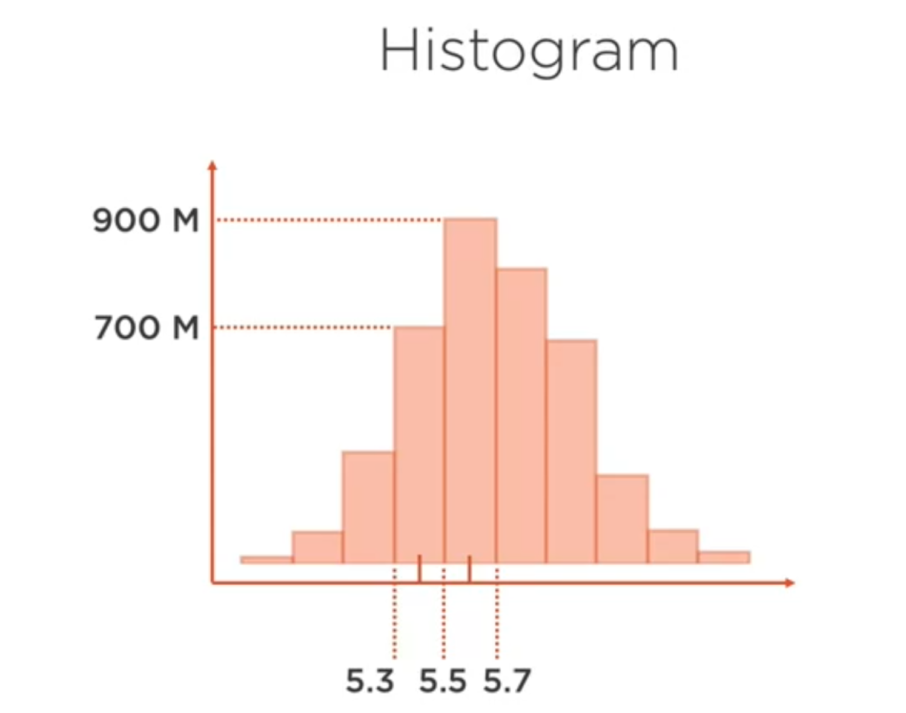
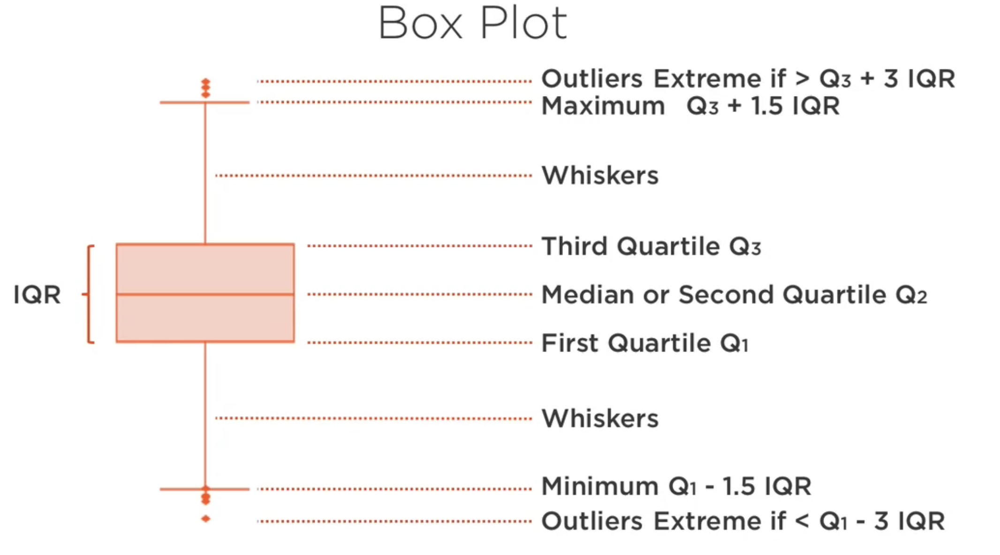
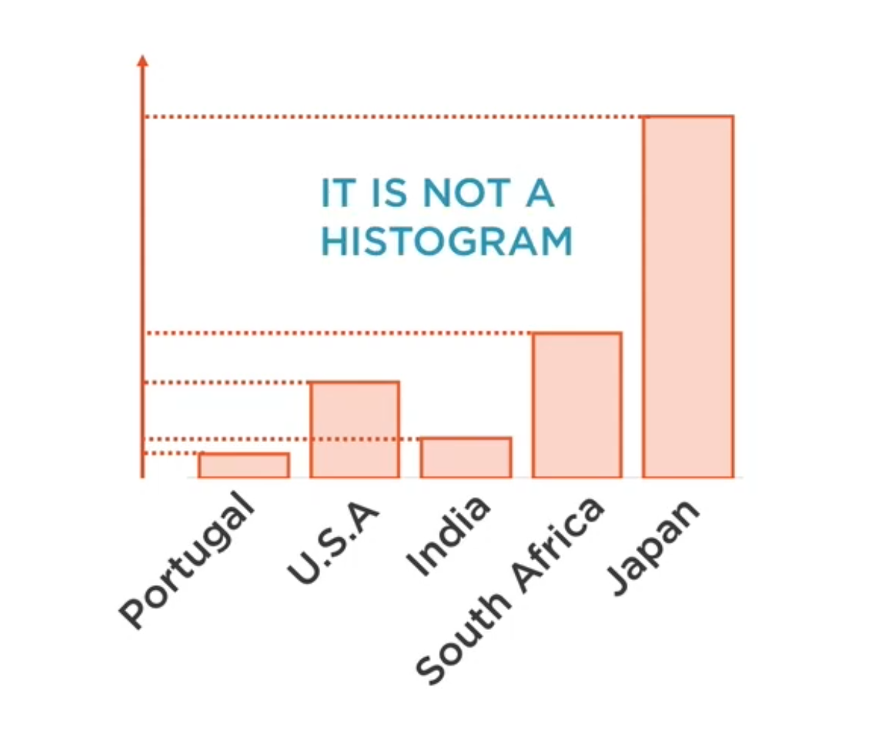
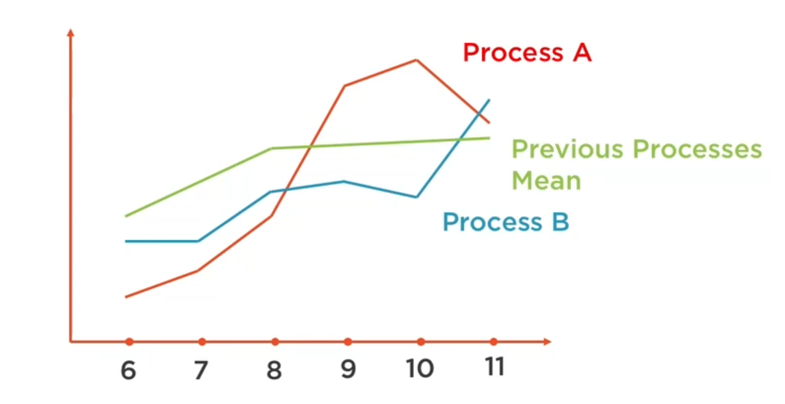
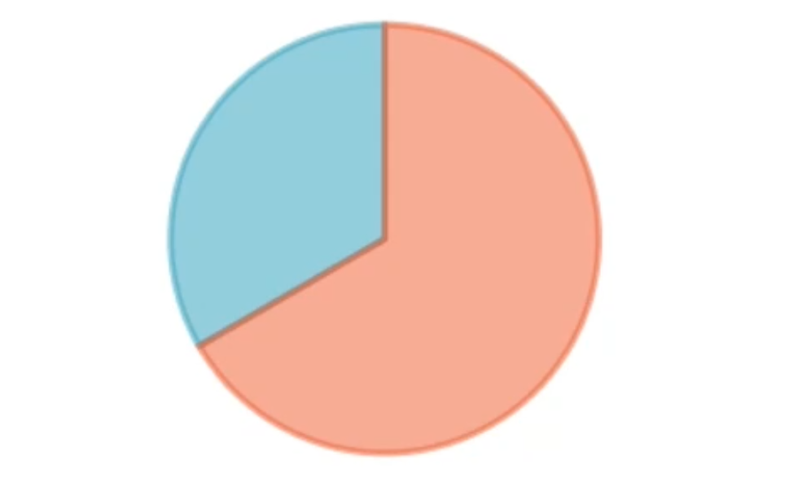

Análisis unidimensional
Contents
Análisis unidimensional¶
Objetivo¶
Como ya se dijo anteriormente, el análisis unidimensional consiste en analizar individualmente a las variables (columnas de un DataFrame) para conocer sus características y su naturaleza. Para ello, se emplea mayormente gráficos, aunque tambien se pueden calcular valores estadísticos como el promdio, la mediana, la kurtosis, entre muchos otros.
Ejemplo de como graficar¶
Técnicas de análisis¶
Importar lbrerías y cargar datos¶
import os
import pandas as pd
import numpy as np
import matplotlib.pyplot as plt
import seaborn as sns
# Cargarlos desde la web
data = pd.read_csv('http://www.dsi.uminho.pt/~pcortez/forestfires/forestfires.csv')
data.head()
---------------------------------------------------------------------------
ModuleNotFoundError Traceback (most recent call last)
Input In [1], in <module>
2 import pandas as pd
3 import numpy as np
----> 4 import matplotlib.pyplot as plt
5 import seaborn as sns
7 # Cargarlos desde la web
ModuleNotFoundError: No module named 'matplotlib'
DataFrame.describe()¶
Llamando a la funcióndescribe() de Pandas se obtiene una matriz la cual tiene varios indicadores para cada una de las columnas. Con estos indicaroes se puede tener una visión general de los datos.
data_description = data.describe(include='all')
data_description
| X | Y | month | day | FFMC | DMC | DC | ISI | temp | RH | wind | rain | area | month_number | |
|---|---|---|---|---|---|---|---|---|---|---|---|---|---|---|
| count | 517.000000 | 517.000000 | 517 | 517 | 517.000000 | 517.000000 | 517.000000 | 517.000000 | 517.000000 | 517.000000 | 517.000000 | 517.000000 | 517.000000 | 517.000000 |
| unique | NaN | NaN | 12 | 7 | NaN | NaN | NaN | NaN | NaN | NaN | NaN | NaN | NaN | NaN |
| top | NaN | NaN | aug | sun | NaN | NaN | NaN | NaN | NaN | NaN | NaN | NaN | NaN | NaN |
| freq | NaN | NaN | 184 | 95 | NaN | NaN | NaN | NaN | NaN | NaN | NaN | NaN | NaN | NaN |
| mean | 4.669246 | 4.299807 | NaN | NaN | 90.644681 | 110.872340 | 547.940039 | 9.021663 | 18.889168 | 44.288201 | 4.017602 | 0.021663 | 12.847292 | 7.475822 |
| std | 2.313778 | 1.229900 | NaN | NaN | 5.520111 | 64.046482 | 248.066192 | 4.559477 | 5.806625 | 16.317469 | 1.791653 | 0.295959 | 63.655818 | 2.275990 |
| min | 1.000000 | 2.000000 | NaN | NaN | 18.700000 | 1.100000 | 7.900000 | 0.000000 | 2.200000 | 15.000000 | 0.400000 | 0.000000 | 0.000000 | 1.000000 |
| 25% | 3.000000 | 4.000000 | NaN | NaN | 90.200000 | 68.600000 | 437.700000 | 6.500000 | 15.500000 | 33.000000 | 2.700000 | 0.000000 | 0.000000 | 7.000000 |
| 50% | 4.000000 | 4.000000 | NaN | NaN | 91.600000 | 108.300000 | 664.200000 | 8.400000 | 19.300000 | 42.000000 | 4.000000 | 0.000000 | 0.520000 | 8.000000 |
| 75% | 7.000000 | 5.000000 | NaN | NaN | 92.900000 | 142.400000 | 713.900000 | 10.800000 | 22.800000 | 53.000000 | 4.900000 | 0.000000 | 6.570000 | 9.000000 |
| max | 9.000000 | 9.000000 | NaN | NaN | 96.200000 | 291.300000 | 860.600000 | 56.100000 | 33.300000 | 100.000000 | 9.400000 | 6.400000 | 1090.840000 | 12.000000 |
Visualización¶
Esto es solamente un ejemplo de la manipulación de las librerías para graficar. En la celda de abajo, se grafica la distribución de los valores de la temperatura y se añaden líneas al gráfico las cuales muestran los indicares de tendencia central así como los límites de los valores atípicos.
Para graficar los datos se utilizan estas dos librerías:
import seaborn as sns
import matplotlib.pyplot as plt
sns.set(color_codes=True)
sns.kdeplot(data['temp'], shade=True)
# Agrega lineas verticales en los indicadores de la tendencia central
plt.axvline(data['temp'].mean(), color='g') # Agrega una línea color verde, la cual indica el promedio
plt.axvline(data['temp'].median(), color='black') # Agrega una línea color negro, la cual indica la mediana
plt.axvline(data_description['temp']['25%'], color='black') # Agrega una línea color negro, la cual indica el Q1
plt.axvline(data_description['temp']['75%'], color='black') # Agrega una línea color negro, la cual indica el Q3
IQR = data_description['temp']['75%'] - data_description['temp']['25%']
upper_outliers = data_description['temp']['75%'] + 1.5*IQR
lower_outliers = data_description['temp']['25%'] - 1.5*IQR
# Agrega dos líneas de color rojo, las cuales indican los límites para los valores atípicos
plt.axvline(upper_outliers, color='r')
plt.axvline(lower_outliers, color='r')
plt.show()

Indicadores de tendencia central¶
Los indicadores que son sirven para medir la tendencia central son:
Media
from statistics import mean
a1 = data['temp'].mean() # utilizando la librería pandas
a2 = mean(data['temp']) # utilizando la librería statistics
a3 = np.mean(data['temp']) # utilizando la librería numpy
print(f'{a1}, {a2}, {a3}')
18.88916827852998, 18.88916827852998, 18.88916827852998
Mediana
from statistics import median
a1 = data['temp'].median() # pandas
a2 = median(data['temp']) # statistics
a3 = np.median(data['temp']) # numpy
print(f'{a1}, {a2}, {a3}')
19.3, 19.3, 19.3
Cuantiles
Son valores que dividen a los datos en cuatro partes iguales.
- 1er cuantil (Q1) 25% de los datos es menor que o igual a este valor.
- 2do cuantil (Q2) La mediana. 50% de los datos es menor que o igual a este valor.
- 3er cuantil (Q3) 75% de los datos es menor que o igual a este valor.
{kind=link}
Indicadores de dispersión¶
Estos indicares muestran cuan dispersos están los datos.
Varianza, desviación estándar
{kind=link}
from statistics import stdev
from statistics import variance
std1 = data['temp'].std() # pandas
std2 = stdev(data['temp']) # statistics
std3 = np.std(data['temp']) # numpy
varianza1 = data['temp'].var() # pandas
varianza2 = variance(data['temp']) # statistics
varianza3 = np.var(data['temp']) # numpy
print(f'Desviación estándar: {std1}, {std2}, {std3}')
print(f'Varianza: {varianza1}, {varianza2}, {varianza3}')
Desviación estándar: 5.806625349573505, 5.806625349573505, 5.801006939598366
Varianza: 33.71689795030963, 33.71689795030963, 33.65168151326841
Valores atípicos
{kind=link}
Asimetría (skweness). Grado de simetría de la distribución.
{kind=link}
from scipy.stats import skew
a1 = data['temp'].skew() # pandas
a2 = skew(data['temp']) # scipy
print(a1, a2)
-0.331172237347285 -0.3302106140354586
Curtosis. Indicador de la “anchura” de una distribución
{kind=link}
from scipy.stats import kurtosis
a1 = data['temp'].kurt() # pandas
a2 = kurtosis(data['temp']) # scipy
print(a1, a2)
0.1361655076587991 0.12326917606611909
Gráficos de distribución¶
Para visualizar los gráficos, se puede utilizar, en vez de librerias externas como en el ejemplo de arriba, la librería pandas. Panda’s Plots
Permite visualizar las frecuencias de diferentes categorías o rangos de valores (clases o bins)
{kind=link}
data['temp'].plot.hist(title='Histograma Temp', color='c', bins=20)
<AxesSubplot:title={'center':'Histograma Temp'}, ylabel='Frequency'>

{kind=link}
data['temp'].plot.density(title='Densidad Temp', color='c')
<AxesSubplot:title={'center':'Densidad Temp'}, ylabel='Density'>

Este es especialmente útil para la identificación de valores atípicos.
{kind=link}
data['temp'].plot.box(title='Box Temp', color='c')
<AxesSubplot:title={'center':'Box Temp'}>

Gráficos de comparación¶
Presenta datos cualitativos con barras rectangulares con alturas o longitudes proporcionales a los valores que representan. (No son histogramas!!)
{kind=link}
df = pd.DataFrame({'lab':['A', 'B', 'C'], 'val':[10, 30, 20]})
df.plot.bar(x='lab', y='val', rot=0)
<AxesSubplot:xlabel='lab'>

Presenta una serie de valores (marcas) conectados por líneas. Se emplean frecuentemente para visualizar tendencias a lo largo del tiempo.
{kind=link}
Para ambos tipos de gráficos, se recomienda aplicarlos para un número reducido de variables (~ 6)
Gráficos de composición¶
{kind=link}
df = pd.DataFrame({'masa': [0.330, 4.87 , 5.97],
'radio': [2439.7, 6051.8, 6378.1]},
index=['Mercurio', 'Venus', 'Tierra'])
# Las dos maneras son equivalentes
df.plot.pie(y='masa', figsize=(5, 5))
df["masa"].plot.pie()
<AxesSubplot:ylabel='masa'>

{kind=link}
df = pd.DataFrame({'vestimenta': [8261.68, 7875.87 , 4990.23],
'equipamiento': [4810.34, 3126.58, 4923.48],
'accesorios': [1536.57, 2019.81, 1472.59],},
index=['Cherry St', 'Strawberry Mall', 'Peach St'])
df
df.plot.bar(stacked=True, rot=0)
<AxesSubplot:>

Utilizando Groupby¶
La función groupby puede ser beneficiosa. Por ejemplo, si queremos saber qué temperatura promedio tiene cada mes se hace lo siguiente:
# Este celda agrega una columna month_number la cual tiene el número del mes.
# Por ejemplo, para una fila que tiene jan como mes, el valor de month_number será 1.
def month_number(month):
if 'jan' == month:
return 1
elif 'feb' == month:
return 2
elif 'mar' == month:
return 3
elif 'apr' == month:
return 4
elif 'may' == month:
return 5
elif 'jun' == month:
return 6
elif 'jul' == month:
return 7
elif 'aug' == month:
return 8
elif 'sep' == month:
return 9
elif 'oct' == month:
return 10
elif 'nov' == month:
return 11
elif 'dec' == month:
return 12
return 0
data["month_number"] = data["month"].map(month_number)
# Ahora, agruparemos los datos según la nueva columna month_number
temperaturas_por_mes = data.groupby("month_number")
# Finalmente, sacaremos el promedio de las temperaturas por mes
temperaturas_por_mes.agg({'temp' : 'mean'})
| temp | |
|---|---|
| month_number | |
| 1 | 5.250000 |
| 2 | 9.635000 |
| 3 | 13.083333 |
| 4 | 12.044444 |
| 5 | 14.650000 |
| 6 | 20.494118 |
| 7 | 22.109375 |
| 8 | 21.631522 |
| 9 | 19.612209 |
| 10 | 17.093333 |
| 11 | 11.800000 |
| 12 | 4.522222 |